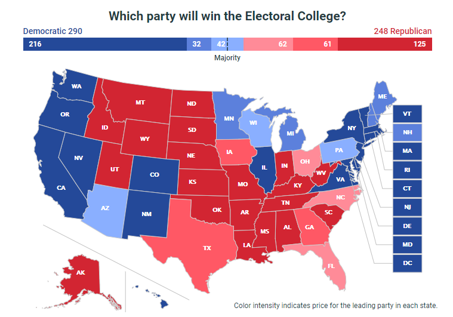
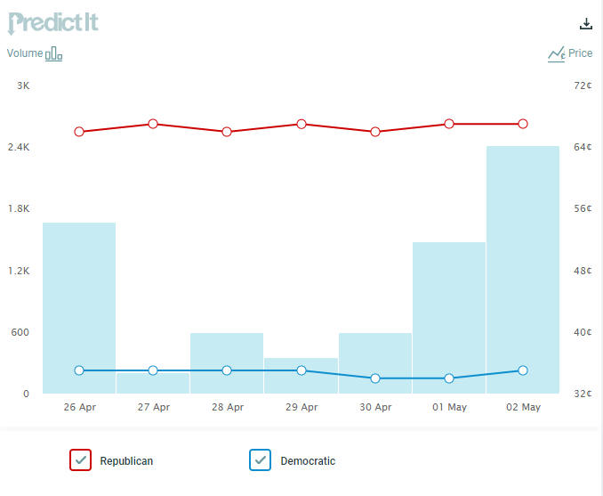

1. I added a simple dynamic statistic calculation by adding a mean line for the average number of games won or the average winning percentage by country. This summary gives the reader a good comparison as to how much the top 10 countries are outperforming the others.
1) Now that I am rereading the handout, I see that I was supposed to answer every question. I saw "leading questions you may use as inspiration" and overlooked the fact that we were supposed to answer all 3. Due to this, for the football dataset, my graphs answer only question 2.
For question 2, I let the user see the top 10 nations by winning percentage for any date range. Often the top nations have only played a handful of matches, so I also let them set a minimum number of required wins to make the top 10 list. The user also can see most total wins, and can consult the world map to see the wins or win percentage of more countries.
My third graph allows the user to search for different leagues of countries. Most countries, especially in later years, are all connected in a large group in the center, while smaller outlier groups are seen on the sides. This gives interesting conclusions: such as some years, most African countries only played with each other.
2) D3 was very helpful because it gave me much more freedom than other charting libraries I have used. One significant advantage was how easy it was to add a mean line to my bar chart; it was no more difficult than adding any other feature, especially with my x() function. A second advantage is the freedom and control concerning colors. I was easily able to have my bar chart and map correspond to the same color axis. A third is the control of transitions; I have much more artistic freedom in D3.
3) D3 is very powerful, but it is incredibly slow to work with. For exploritory analysis on data, I would much rather save time and use a simpler library. Beyond that, it takes much more work to make something look good in D3 than in certain libraries like highcharts, so for graphs that aren't too complex, my output in highcharts will probably be nicer than my D3 output. Lastly, It is very challenging to figure out how to do new things with D3; most people find related examples online and adapt them to their use. You have to know D3 well to work with it without consulting any resources.
4) One way graphs may confuse viewers is by going against conventions. We have created patterns, often arbitrary, in how we display data, and breaking these conventions can confuse readers. For example, the article shows the conventions that darker areas in density maps imply more density. To avoid this, you should consult similar graphs to the one you are making and see if you find any unspoken rules.
A way graphs can mislead viewers is by improperly using scale. This can be done by omitting the baseline, by compressing or expanding the chart in one direction, or by using 2D/3D drawings to represent 1D values. This is often done intentionally, but when done as a mistake, the chart creater must think carfully, such as trying to choose an x and y scale that don't compromise the data or add bias or considering how drawings should scale with numbers.
5) For both my good and not-as-good examples, I sourced graphs from PredictIt, an online betting market designed to track predictions of things such as the 2020 presidential election.
The first chart is great because it observes convention, displays a large amount of data in a very concise way, and includes a very informative summary. It obeys convention by associating darkness with certainty. In addition, light blue seems much closer to light red than dark blue does to dark red, so it reinforces the fact that this is a spectrum of percentages. In addition, the colors are associated with the political parties they represent. Lastly, the data is shown both geographically and in terms of winning a delegate majority; it is easy to see both which regions lean towards Biden and the fact that if everything goes as the market currently predics, Biden will win with a small margin.
The second chart has strengths, but it could definitely be improved. The chart shows both trading volume and share value, and it similary color codes by the conventions of the two political parties. However, it respects the baseline for share volume and omits the baseline for share price, making the graph less readable. Since this chart is used for each state, it is harder to compare them side-by-side as large gaps and small margins are not easily distinguishable; battleground states aren't much more spread out than solid ones.
 